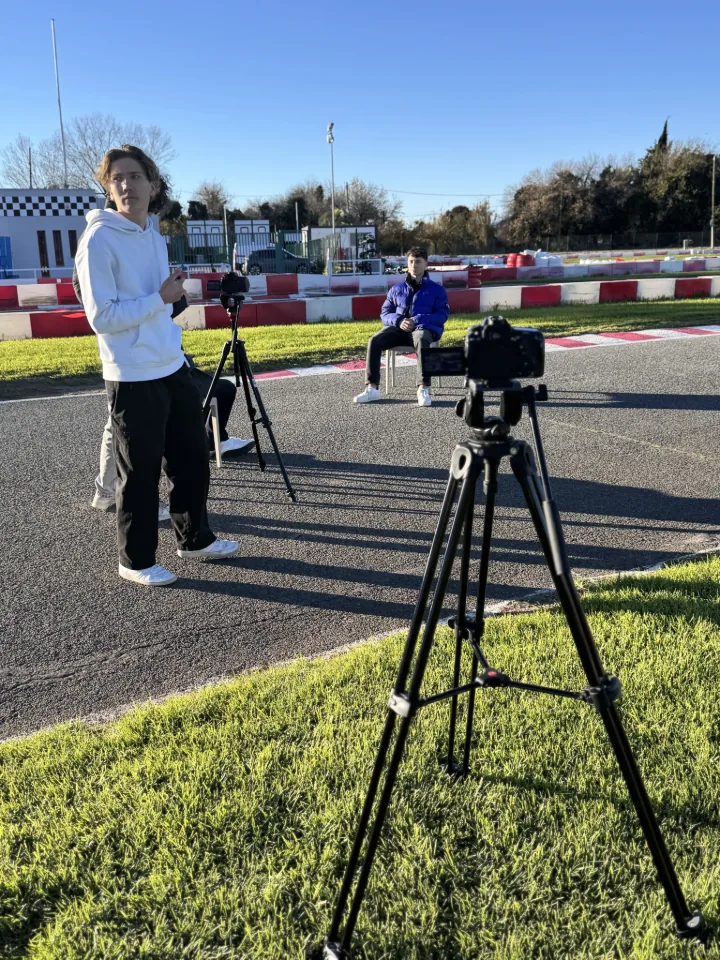

Présentation
Un sport méconnu, un pilote passionné.
Reportage universitaire avec pour objectif de mettre en lumière un sport peu représenté dans les médias : le karting. Nous avons suivi Lorenzo Cioni, pilote passionné, lors d'une session d'entraînement au karting de Fréjus. À travers ce reportage, nous avons voulu montrer les coulisses de ce sport exigeant, souvent tremplin vers le sport automobile professionnel.

Mon rôle
Prise de vue, son & montage.
J'ai participé à plusieurs étapes : prise de vue durant l'interview de Lorenzo Cioni, captation de séquences dynamiques sur le circuit, prise de son de l'intervieweur, contribution au montage pour rythmer le reportage et sublimer les images.
Matériel & outils
Multi-équipement terrain.
Caméra pour l'interview et les plans fixes. GoPro pour les plans embarqués. Drone FPV pour les prises de vue aériennes. Micro-cravate DJI pour la qualité sonore de l'interview. Post-production sur Premiere Pro.
Résultat